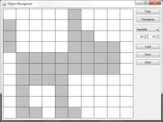
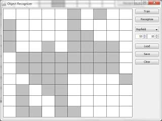
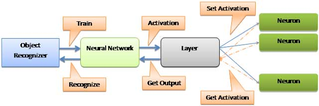

Image Recognition using Neural NetworkMonday, September 19, 2011
Hopfield network is a form of recurrent artificial neural network invented by John Hopfield. Hopfield networks serve as content-addressable memory systems with binary threshold units. They are guaranteed to converge to a local minimum, but convergence to one of the stored patterns is not guaranteed. Furthermore, it is through Hopfield networks that human memory can be father understood.
Image recognition is one of the key problems of modern research in neural networks. In practice, the results of these studies are used to solve problems, as relevant to everyday mental activity of man – recognition of text, speech, handwriting, and in the processing of vast amount of information, where the standard mathematical approaches exhaust its potential.
A further story will focus on the image recognition problem. I’ll show you how by using the Hopfield neural network you can solve this problem. A similar algorithm can be used for image restoration, in the presence of minor defects.
Suppose there is a neural network size N = 100, weight matrix contains a set of black and white pictures (+1 - black, -1 - white), among which is the image dogs (Fig. 1). If you set the initial state of the network close to this vector (Fig. 2), the neural network is activated to restore the original image. In this sense we can say that the Hopfield network solves the problem of the image recognition (although, strictly speaking, the resulting reference image is still needed to make a number of the class that in some cases can be very computationally challenging).
Figure 1 - Source picture
 Figure 2 - Picture for recognitionNeural Network
The input of the network is a bipolar vector (class Vector), in which (+1) corresponds to a black pixel, and (-1) to white. The learning process is reduced to three operations: multiplying the matrix by its transposition, setting the northwest diagonal to -1 and adding the work matrix to the existing weight matrix.
public void train(int[] input) { int[][] work = new int[NETWORK_SIZE][NETWORK_SIZE]; /* multiply the matrix by its transposition */ for (int row = 0; row < NETWORK_SIZE; ++row) { for (int col = 0; col < NETWORK_SIZE; ++col) { work[row][col] = input[row] * input[col]; } } /* set the northwest diagonal to -1 */ for (int x = 0; x < NETWORK_SIZE; ++x) { work[x][x] -= 1; } /* add to the existing weight matrix */ for (int row = 0; row < NETWORK_SIZE; ++row) { for (int col = 0; col < NETWORK_SIZE; ++col) { matrix[row][col] += work[row][col]; } } }
In the process of recognition is formed layer of the initial state is set equal to the weight matrix of network, after is called the activation method, the parameter of which is a boolean vector.
public int[] recognize(int[] input) { boolean[] pattern = new boolean[NETWORK_SIZE]; int[] output = new int[NETWORK_SIZE]; for (int row = 0; row < NETWORK_SIZE; ++row) { pattern[row] = (input[row] == 1) ? true : false; } Layer net = new Layer(matrix); net.activation(pattern); int row = 0; for (boolean i : net.getOutput()) { output[row++] = i ? 1 : -1; } return output; }
Activation of the layer - a process that sets the matrix of weights of each neuron and to determine the answer to the network input pattern.
public void activation(boolean[] pattern){ for(int i = 0; i < size; ++i){ neurons[i].setActivation(neurons[i].act(pattern)); output[i] = threshold(neurons[i].getActivation()); } }